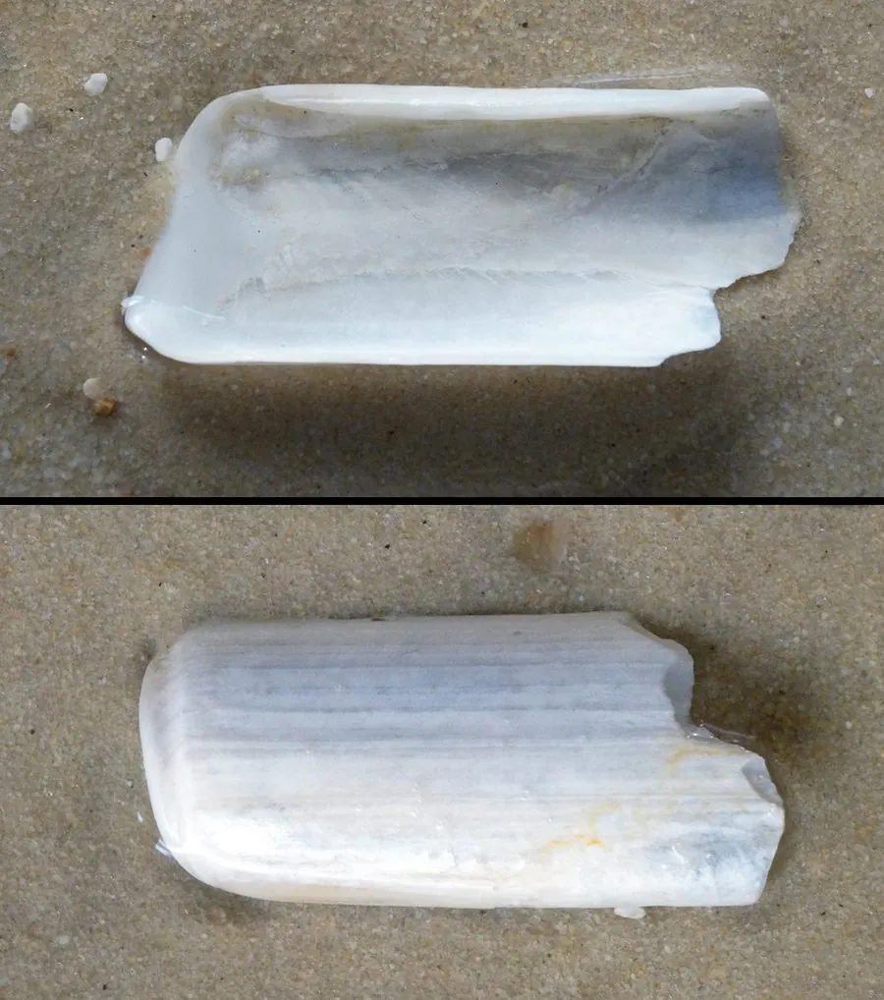

软体动物 · 动物界
长竹蛏 Solen gouldii

壳形细长如竹管的大型蛏类，栖于潮间带沙质滩涂，靠足部迅速下潜，是中国沿海常见的食用贝。
- 分类
- 门软体动物门纲双壳纲目帘蛤目科竹蛏科属竹蛏属
- 栖息环境
- 潮间带中下部沙质滩涂与浅海沙底，垂直穴居
- 地理分布
- 中国沿海及日本、朝鲜半岛
- 保护级别
- 常见经济贝类，野生资源受滩涂采捕压力
物种志
长竹蛏的壳长可达十至十五厘米，壳形细长呈竹管状，两壳合抱，两端开口，壳面黄绿至黄褐色，有细致的生长纹，壳皮薄而易脱落。壳内面白色，铰合部齿退化。足部发达呈圆柱形，能伸长挖掘，水管粗长，末端有触手，退潮时缩在沙里，涨潮时伸出取食，行动全靠这条强壮的足。
它分布于中国沿海以及日本、朝鲜半岛，栖息在潮间带中下部的沙质滩涂和浅海沙底，垂直穴居于沙中，深度可达半米。它以滤食水中的浮游生物和有机碎屑为生，受惊时靠足部迅速下潜，很难挖到。它是中国沿海常见的食用贝类，肉质脆嫩，多用于爆炒或做汤，滩涂采捕和养殖都很普遍，采捕时需注意与近缘种区分。
形态与习性
- 壳长十至十五厘米，细长如竹管
- 壳面黄绿至黄褐，生长纹细致
- 足发达圆柱形，能迅速挖掘下潜
- 穴居垂直穴居沙中，深可达半米
- 食性滤食浮游生物与有机碎屑
- 利用沿海常见食用贝，可采捕与养殖
趣味知识
- 它在沙里钻得极快，一勺盐撒进洞口，它就会顶出来。
- 两端的壳口都开着，一根水管进水一根出水，边滤食边呼吸。
- 壳薄得像竹片，捏重一点就会碎，挖的时候要格外小心。